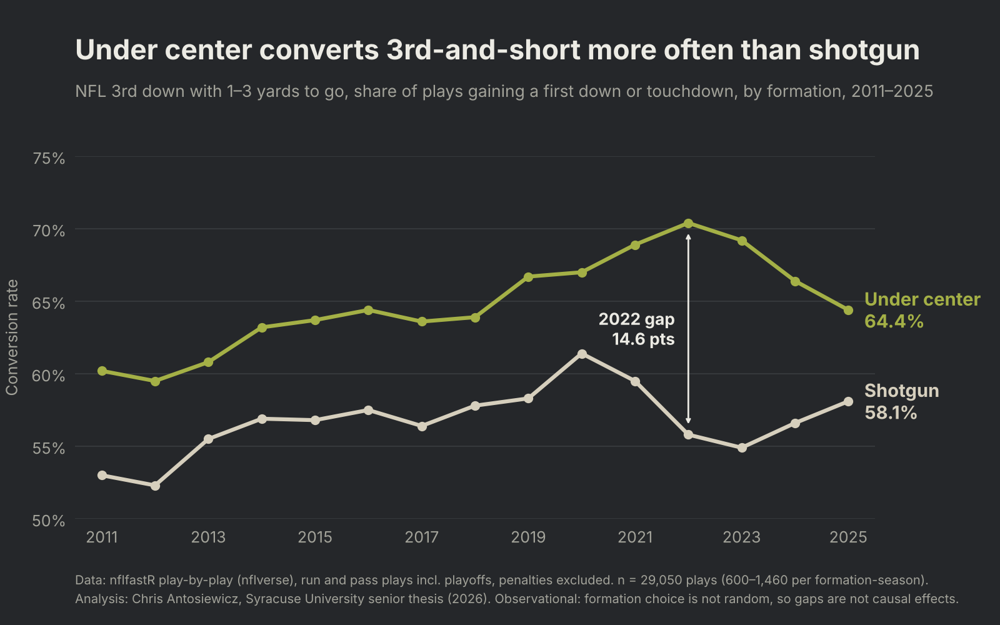
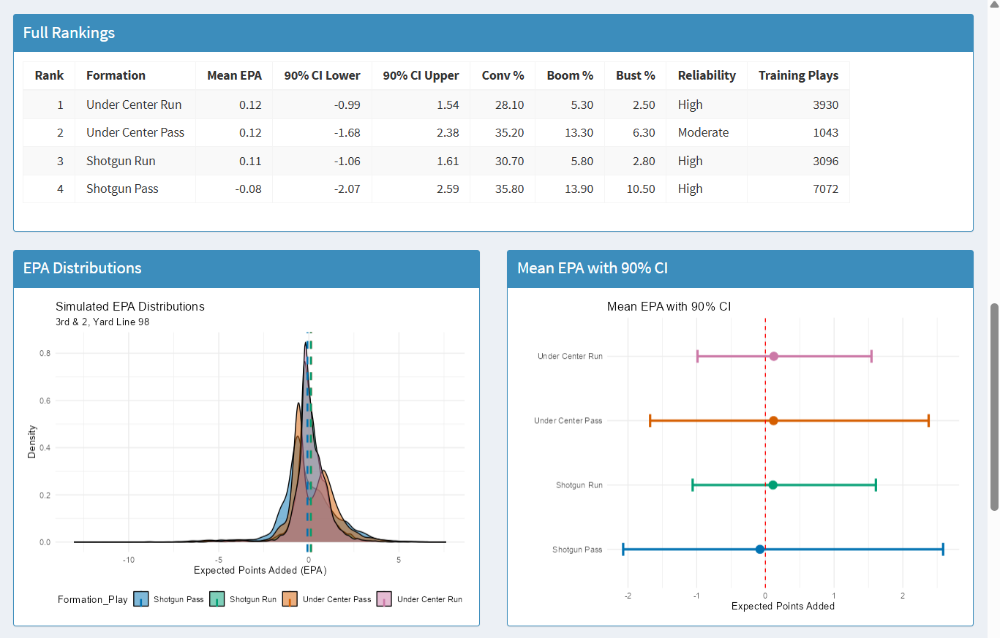

NFL / COMPLETED / UPDATED MAY 2026
Shotgun or Under Center: NFL Formation Recommender
Machine-learning formation recommendations from 15 seasons of NFL play-by-play

Overview
Every NFL snap starts with a choice between shotgun and under center, yet that choice is usually driven by habit and scheme identity rather than situational evidence. Shotgun usage rose from 40.7% of run and pass plays in 2011 to 72.2% in 2023, but league-wide EPA per play showed no matching improvement, and 2023 was the lowest-EPA season in the sample. This project asks a narrower question: in which situations does each formation-play combination (Shotgun Pass, Shotgun Run, Under Center Pass, Under Center Run) produce better expected outcomes? Using public nflfastR play-by-play data, I first described 15 seasons of trends, then studied 3rd-and-short conversion, formation switching, and goal-line touchdown rates. Logistic regression and a tuned decision tree, trained on 2016–2023 and tested on 2024–2025, showed which game-state variables drive formation choice. Eight Random Forest models predict EPA and yards gained for each combination, using a lagged quarterback quality composite, scramble removal, a 10,000-draw residual simulation, and a sample-size reliability system that suppresses thinly supported recommendations. Single-play prediction is weak (EPA R² at most 0.012), but situation-level estimates are more useful (yards R² 0.76 across 150 test cells). The work is packaged as a Quarto site and a Shiny recommender app.
Findings
- Shotgun share of NFL run/pass plays rose from 40.7% (2011) to a 72.2% peak (2023), while league EPA per play showed no matching gain; 2023 was the lowest-EPA season (−0.035). Descriptive, not causal.
- On 3rd down with 1–3 yards to go, under center converted more often than shotgun in every season 2011–2025: 64.5% vs 56.9% pooled (gap 7.6 pts, 95% CI 6.4–8.7; n = 29,050), peaking at 14.6 pts in 2022. Observational; affected by selection bias.
- Random Forest single-play R² was ≤0.012 for EPA on 2024–25 test data, but across 150 situation cells the simulation reached EPA R² 0.315 (RMSE 0.210) and yards R² 0.760 (MAE 0.608 yd). The recommender matched the best observed call in 42 of 64 down-distance cells (65.6%).

Limitations and what’s left
- Observational data: formation choice is not random (selection bias)
- No defensive personnel, offensive personnel, motion, or play-action flags in public data
- nflfastR counts pistol as shotgun
- Models trained on 2016–2023 may lag current tactics; retraining is planned, not done
- Single-play predictive power is very low; Under Center Pass and medium-distance EPA estimates are unreliable
- Each play is optimized in isolation, with no drive- or game-level strategy